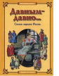

Давным-давно... Сказки народов России

Россия - огромная, многонациональная страна, в которой живет около 100 наций и народностей. У каждого из них - своя история, свой фольклор, а значит, и свои сказки. Условия жизни, природа и то, во что люди верили, - все нашло отражение в удивительных сказках. Порой они забавные, окрашены юмором, зачастую грустные, но обязательно мудрые. В них отразился опыт поколений. Прочитать их - значит понять душу народа и самому стать умнее. Выпуски серии "Моя первая книга" ("Дело было так... Басенки, побасенки", "Жил-был король. Сказки народов мира", "Не хлебом единым... Притчи и христианские легенды") адресованы малышам. Они расширят их кругозор, помогут лучше ориентироваться в жизни, научат понимать людей. Формат: 20,5 см x 29 см.